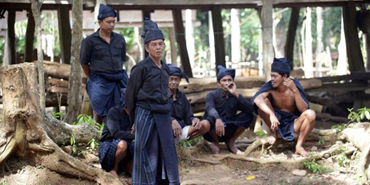
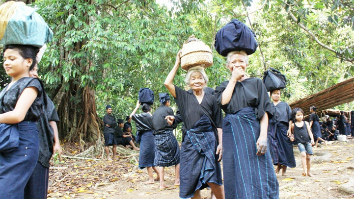
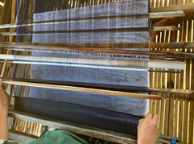
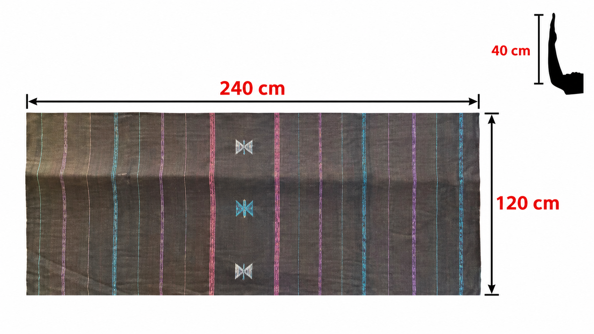
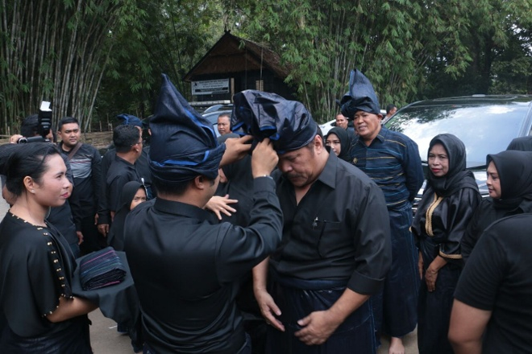
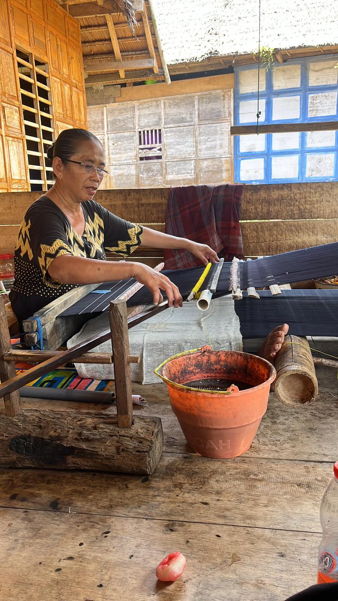

Sejarah Masyarakat Adat Ammatoa Kajang
Masyarakat adat Kajang, khususnya komunitas adat Ammatoa di Bulukumba, Sulawesi Selatan, adalah kelompok masyarakat yang hingga kini masih memelihara warisan budaya leluhur secara sangat kuat.

Sejarah Masyarakat Suku Kajang
Mereka tinggal di kawasan adat (Tana Toa, Tanah Toa, dan beberapa kampung adat dalam wilayah Kajang) yang relatif terisolasi secara geografis.
Kaitan Matematika
Proses Pattannungan Kain Tope Le'leng menggunakan sistem pengukuran tradisional hasta (1 hasta ≈ 40 cm) dan jumlah benang yang selalu ganjil untuk keseimbangan.
Lihat Analisis arrow_forwardSTATISTIK
85% Selesai
Galeri Visual Budaya Kajang
Klik pada kartu untuk eksplorasi lebih dalam.
Sejarah
LVL 1Menelusuri asal-usul Ammatoa Kajang dan pentingnya Tope Le'leng dalam identitas masyarakat.

Filosofi
LVL 1Memahami nilai kamase-masea (hidup sederhana dan rendah hati) dan filosofi yang diwujudkan dalam setiap aspek kehidupan.

Proses Menenun
LVL 2Mengamati tahapan Pattannungan, pewarnaan Mappalettuk, dan penyelesaian Anggarusu' yang membutuhkan ketelitian tinggi.

Sistem Pengukuran Hasta
LVL 2Masyarakat Kajang menggunakan sistem pengukuran tradisional hasta (1 hasta ≈ 40 cm) menghasilkan kain 240 cm × 120 cm.

Struktur Adat & Ammatoa
LVL 1Mengenal Ammatoa sebagai pemimpin adat tertinggi dan struktur wilayah adat Kajang Dalam (Ilalang Embayya) dan Kajang Luar (Ipantarang Embayya).

Alat Tenun
LVL 2Mengenal alat tradisional dalam proses Pattannungan: Pappakang, Panggepe, Balira, Tumpa, dan alat lainnya.
Siap untuk Tantangan Quiz?
Uji pemahamanmu tentang budaya dan tradisi masyarakat Ammatoa Kajang melalui simulasi quiz interaktif.